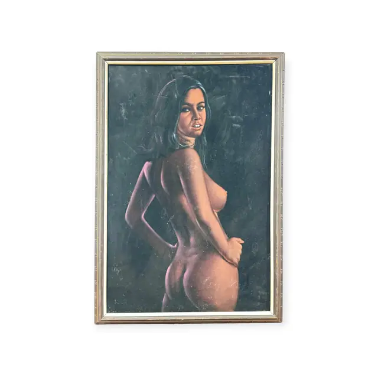
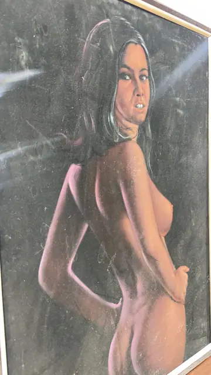

Paintings & Prints
Nude Looking Over Her Shoulder, Signed, Framed
· 1970s
Price Upon Request


About the Item
A tall portrait-format work on a near-black ground. A standing woman is seen from behind, her body turned so that the light rakes down her back, hip and thigh in soft rose and warm flesh tones while the shadowed side dissolves into the dark. She looks back over her right shoulder with long dark hair falling forward, her face modelled crisply against the void. The handling is soft and blended with no visible brush relief - the tonal transitions are rubbed and airbrush-smooth, and the background is a flat velvety black. Medium: pastel or airbrushed painting on board. Signed lower left of the image. Condition: the glazing is dusty and covered in fine scratches and swirl marks, with several bright scuff streaks across the upper left; a scattering of pale specks and small circular marks shows across the dark ground. It is not possible to tell from the photographs whether those marks are on the glass or on the work itself.
Details
- Creation Year:
- 1970s
- Dimensions:
- Height: 40.0 in (101.6 cm)
Width: 27.5 in (69.85 cm)
outside of frame - Medium:
- pastel or airbrushed painting on board
- Period:
- 20Th
- Condition:
- Offered in the condition shown in the photographs.
- Reference Number:
- VO-66
- Documentation:
- no certificate or label photographed